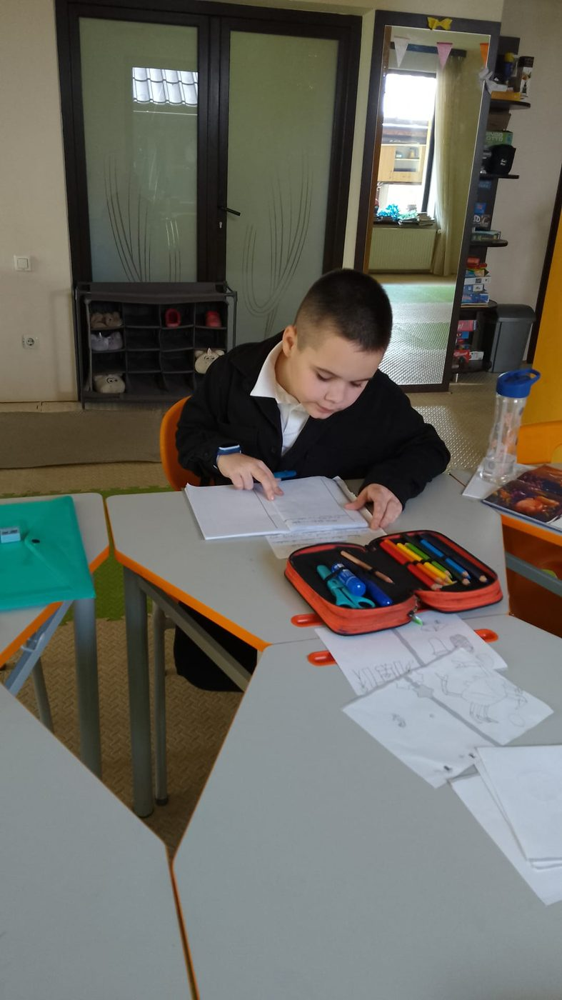
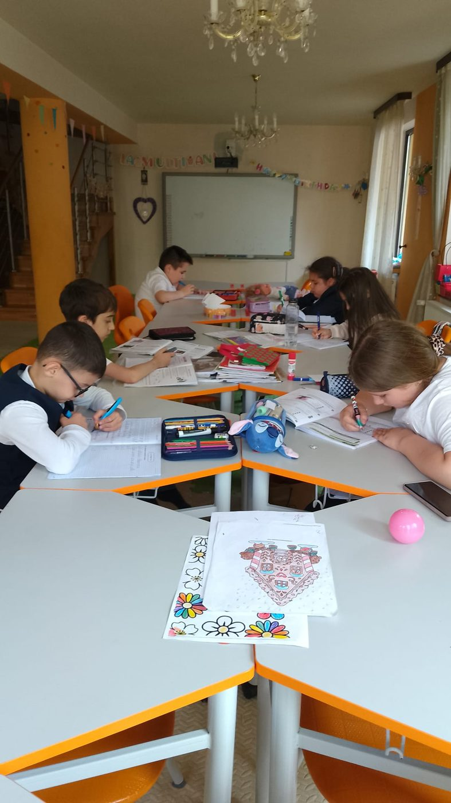
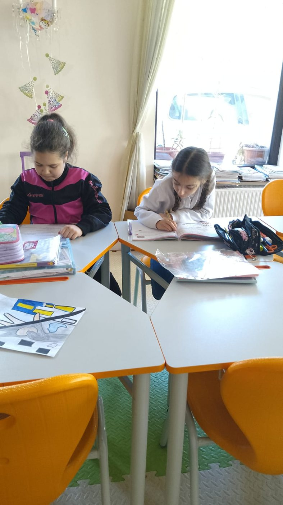
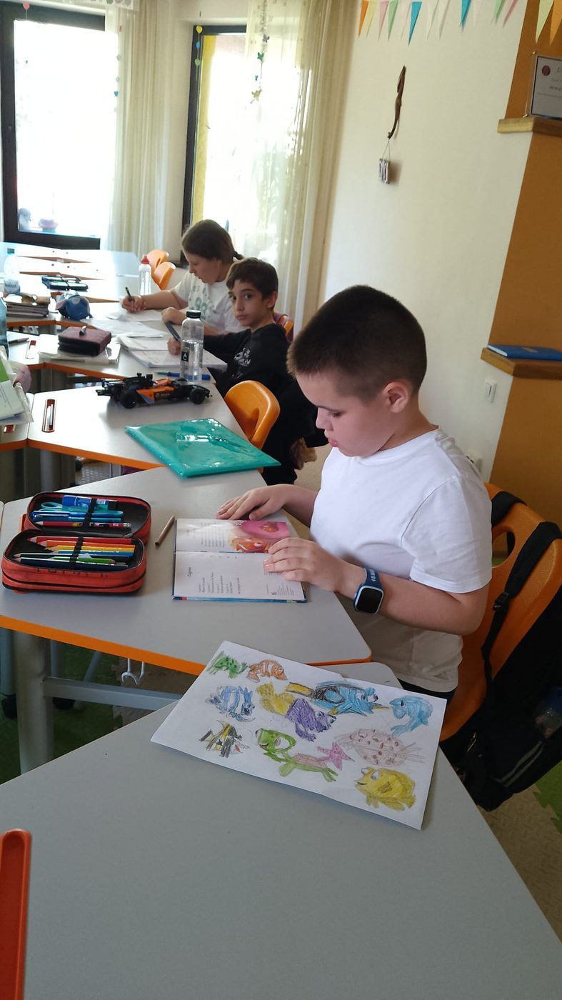
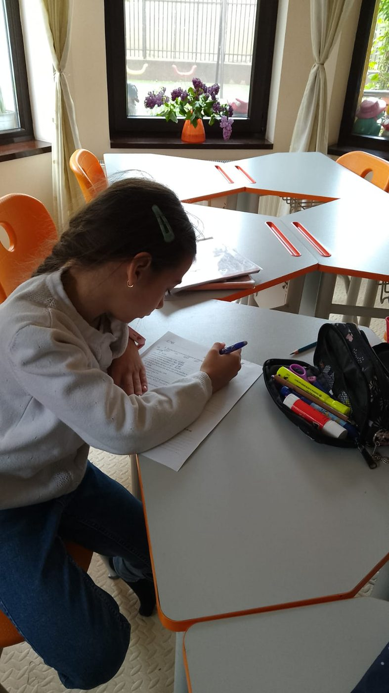
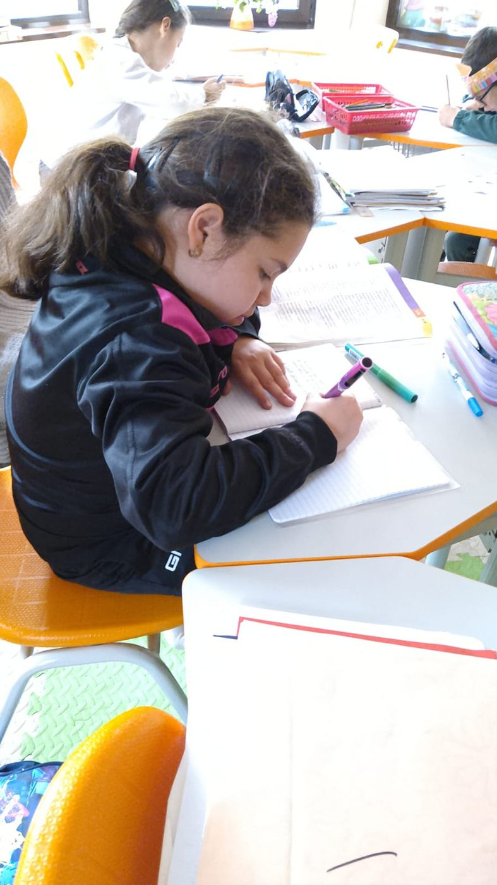
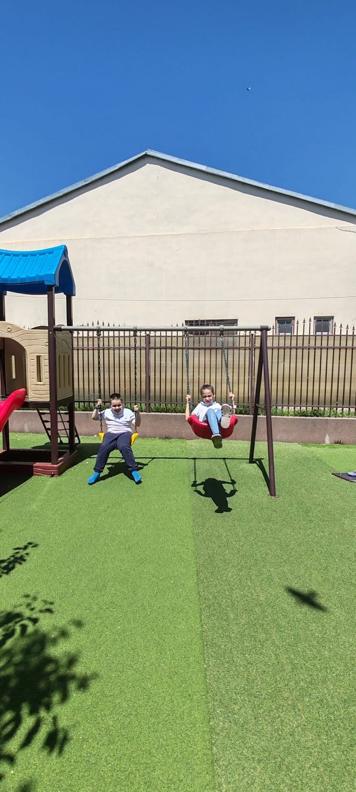
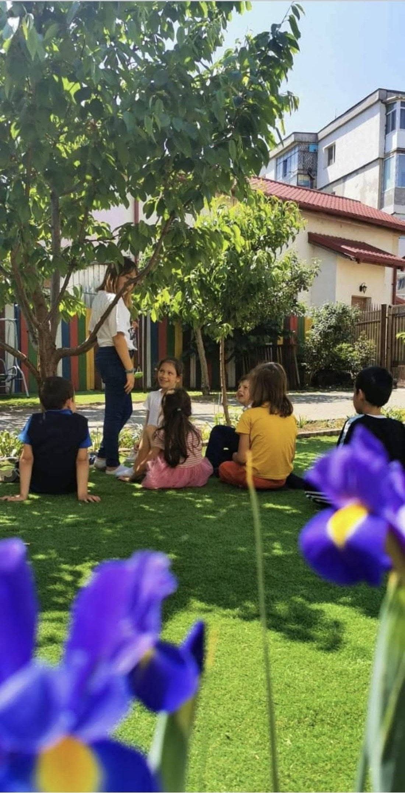
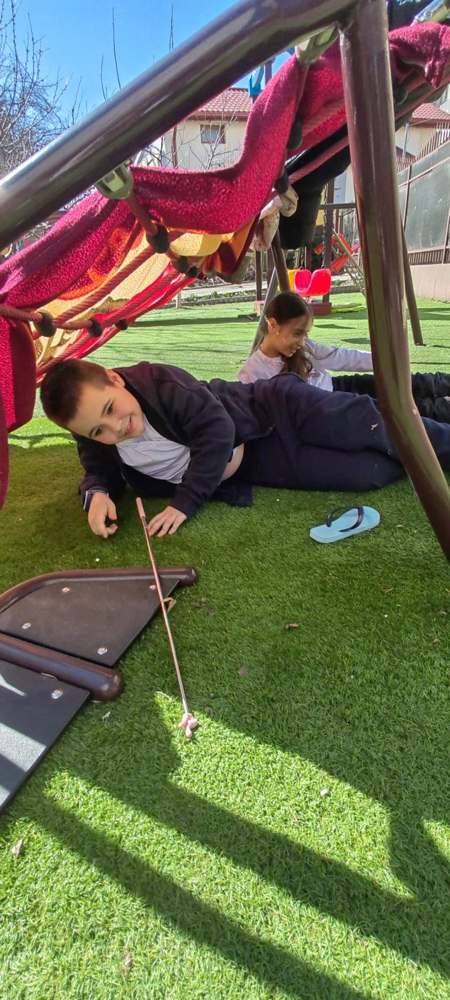

Mediul în care învață copilul contează la fel de mult ca ce învață. Iată unde își petrece după-amiezele.
Mese ergonomice, lumină naturală generoasă și o tablă interactivă multitouch care transformă lecțiile în experiențe. Un spațiu unde copiii își fac temele cu sprijin și apoi explorează liber.










Un loc de joacă propriu, cu gazon, leagăne, tobogan, plasă de cățărat și spațiu pentru alergat. Pentru că un copil are nevoie să se miște, să râdă și să socializeze — nu doar să stea la masă.
Aici se nasc prieteniile, se consumă energia și se învață jocul în echipă.



Te invităm la o vizită gratuită — vino să simți atmosfera și să cunoști echipa.
Programează o vizită →